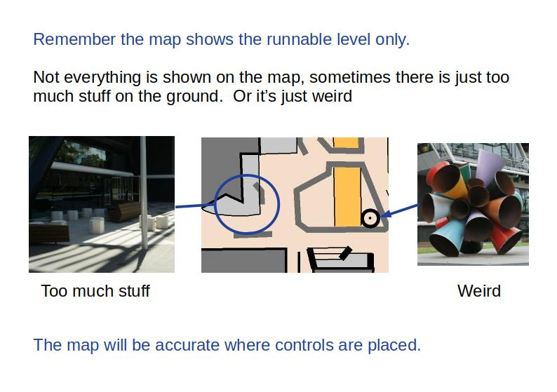

<!DOCTYPE html>
<html><head>
<meta http-equiv="content-type" content="text/html; charset=UTF-8">
    <title>Orienteering</title>
    <script src="./js/jquery.min.js"></script>
    <script src="./js/jspsych.js"></script>
    <script src="./js/plugins/jspsych-html-keyboard-response.js"></script>
    <script src="./js/plugins/jspsych-external-html.js"></script>
    <script src="./js/plugins/jspsych-instructions.js"></script>
    <script src="./js/plugins/jspsych-image-keyboard-response.js"></script>
    <link href="./js/css/jspsych.css" rel="stylesheet" type="text/css"></link>
  </head>
  <body></body>
  <script>
    
    
// #################  create timelines & other variables  #################

var timeline = [];  // Create the variable but not run it!
var is_beginner

// #################  create introduction screen  #################

    var introduction = {
      type:'external-html',
      url: "./doc/introduction_page.html",  // relative path (add to app.yaml!)
      cont_btn: "next_b",
      };
    timeline.push(introduction);  // Into the timeline

// #################  create consent screen  #################

    // Function that checks if a subject has given consent to participate.
    // This stops execution of the rest of the timeline until the agreement checkbox is checked
    var check_consent = function(elem) {
        if ($('#consent_checkbox').is(':checked')) {
            return true;  // Returning true lets us keep going
        }
        else {
            alert("If you wish to participate, you must check the box next to the statement 'I agree to participate in this study.'");
            return false;  // False keeps us on the form
        }
        return false;
    };
 
    // declare the block.
    var consent = {
        type:'external-html',
        url: "./doc/consent_page.html",  // relative path (add to app.yaml!)
        cont_btn: "start",
        check_fn: check_consent  // Run the check_consent function
    };
    timeline.push(consent);  // Into the timeline

// #################  create demographics screen  #################

    var check_consent = function(elem) {
        // get the value of a radio button
        function getRadioButton(name) {
            var i, radios = document.getElementsByName(name);
            for (i = 0; i < radios.length; i = i + 1) {
                if (radios[i].checked) {
                    return (radios[i].value);
                }
            }
        }
        jsPsych.data.addProperties({
	    gender: getRadioButton("gender"),
        age: document.getElementById("age").value,
        language: document.getElementById("language").value,
        country: document.getElementById("country").value,
        experience: getRadioButton("experience"),
        handedness: getRadioButton("handedness"),
        mapholding: getRadioButton("mapholding")
        })
        is_beginner = getRadioButton("experience")  // for later!
        // Effectively checks to ensure that we have valid inforamtion in all radio buttons
        // won't let you move forward unless all radio's have been answered
    
        return true // Returning true moves us on the the next item in the timeline
                    // returning false would prevent progress
    };

    var demographics = {
        type:'external-html',
        url: "./doc/demographics_page.html",
        cont_btn: "demographics_done",
        check_fn: check_consent
        };
    timeline.push(demographics);

// #################  a banner screen that shows briefly  #################

    introduction = {
        type: 'image-keyboard-response',
        stimulus: 'img/intro1.jpg',
        trial_duration: 1000,
        choices: jsPsych.NO_KEYS
    };
    timeline.push(introduction);

// #################  create training screens  #################

    var if_trial = {  // Only if beginner
        type: 'instructions',
        pages: [
            '</img>',
            '</img>',
            '</img>',
            '</img>',
            '</img>',
            '</img>',
            '</img>'],
        show_clickable_nav: true
    }

    var if_node = {
        timeline: [if_trial],
        conditional_function: function(){  // Conditional function prevents page displaying if false
            // get the data from the previous trial, and decide if we will see it
            if((is_beginner == "never")|(is_beginner == "some"){
                return true;
            } else {
                return false;
            }
        }
    }
            timeline.push(if_node);

// #################  create Briefing screens  #################

    var instructions = {
        type: 'instructions',
        pages: [
            '</img>',
            '</img>',
            '</img>'],
        show_clickable_nav: true
    };
    timeline.push(instructions);

// #################  create 'Can We?' demo screens  #################

// Fixation
    var CWdemo = {
        type: 'image-keyboard-response',
        stimulus: './img/CW-01-y-start.jpg',
        trial_duration: 1000,
        choices: jsPsych.NO_KEYS
    };
    timeline.push(CWdemo);
// Map
    CWdemo = {
        type: 'image-keyboard-response',
        stimulus: './img/CW-01-y-map.jpg',
        trial_duration: 500,
        choices: jsPsych.NO_KEYS
    };
    timeline.push(CWdemo);
// Picture
    CWdemo = {
        type: 'image-keyboard-response',
        stimulus: './img/CW-01-y-pic.jpg',
        choices: ['Y', 'N'],
        prompt: "<p>If you can get to the control, press 'Y'. If you can't, press 'N'",
        response_ends_trial: true
    };
    timeline.push(CWdemo);
// Notice that the 'real' block is about to start
    CWdemo = {
        type: 'instructions',
        pages: [
            '</img>'],
        show_clickable_nav: true
    };
    timeline.push(CWdemo);

// #################  create debrief screen  #################
    var debrief = 
    {
        type: 'html-keyboard-response',
        stimulus: 'All done.  Thank you for your participation.  <br>Nearly done.</br>',
        choices: [' '],
        prompt: "<p>Pressing the space bar will save the data.</p>"
    };
    timeline.push(debrief);

 // #################  run the second timeline  #################

    jsPsych.init ({
        timeline: timeline,  // Oooh yes, now we execute the time line for the experiment
        preload_images: images,
        on_finish: function() { 
            endExperiment( jsPsych.data.get().csv(), function() {document.write(
                '<div id="endscreen" class="endscreen" style="width:1000px"><div class="endscreen" style="text-align:center; border:0px solid; padding:10px; font-size:120%; width:800px; float:right"><p><br><br><br>All done!<br><br>The data has been saved - you may close this window. Please contact me if something goes wrong and I\'ll fix it as quickly as possible.</p></div></div>'
                        )
                    }
                )
            }
        });
// The endExperiment function is called on completion of the timeline

    function endExperiment(dataset,callback) {
        $.post('submit',{"content": dataset});
        setTimeout(callback,1000)
    }  
// Posts the dataset into a location where it can be found by the app engine

	  /* image list */
	  var images = [
		  './img/intro1.jpg',
		  './img/intro2.jpg',
		  './img/intro3.jpg',
		  './img/intro4.jpg',
		  './img/intro5.jpg',
		  './img/briefing1.jpg',
		  './img/briefing2.jpg',
		  './img/briefing3.jpg',
		  './img/briefing4.jpg',
		  './img/CW-1-y-start.jpg',
		  './img/CW-1-y-map.jpg',
		  './img/CW-1-y-pic.jpg'
        ];

        
//// generate a random subject ID with 15 characters
//var subject_id = jsPsych.randomization.randomID(15);

//// pick a random condition for the subject at the start of the experiment
//var condition_assignment = jsPsych.randomization.sampleWithoutReplacement(['conditionA', 'conditionB', 'conditionC'], 1)[0];


//// record the condition assignment in the jsPsych data
//// this adds a property called 'subject' and a property called 'condition' to every trial
//    jsPsych.data.addProperties({
//    subject: subject_id,
//    condition: condition_assignment
//    });


   </script>
</html>
